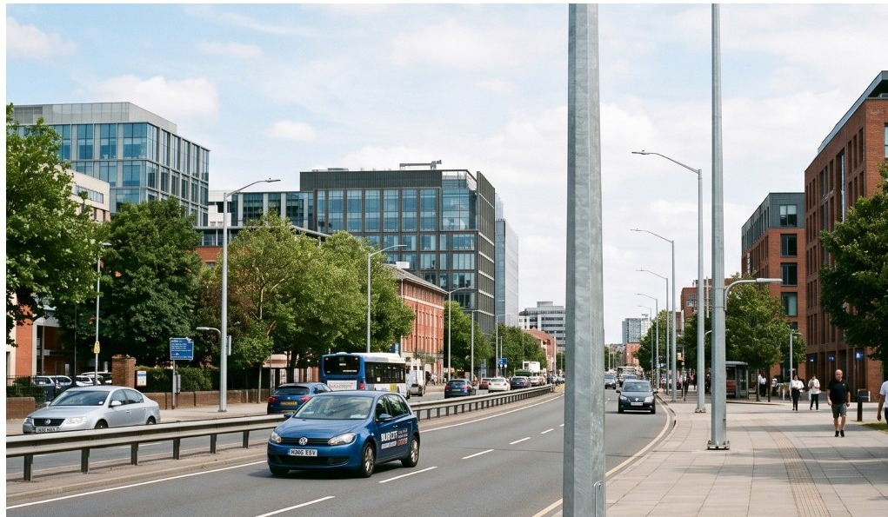
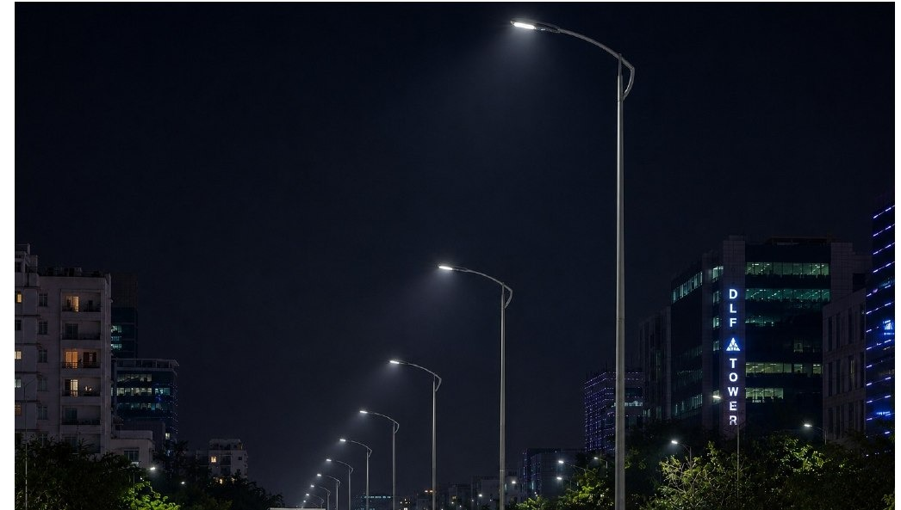
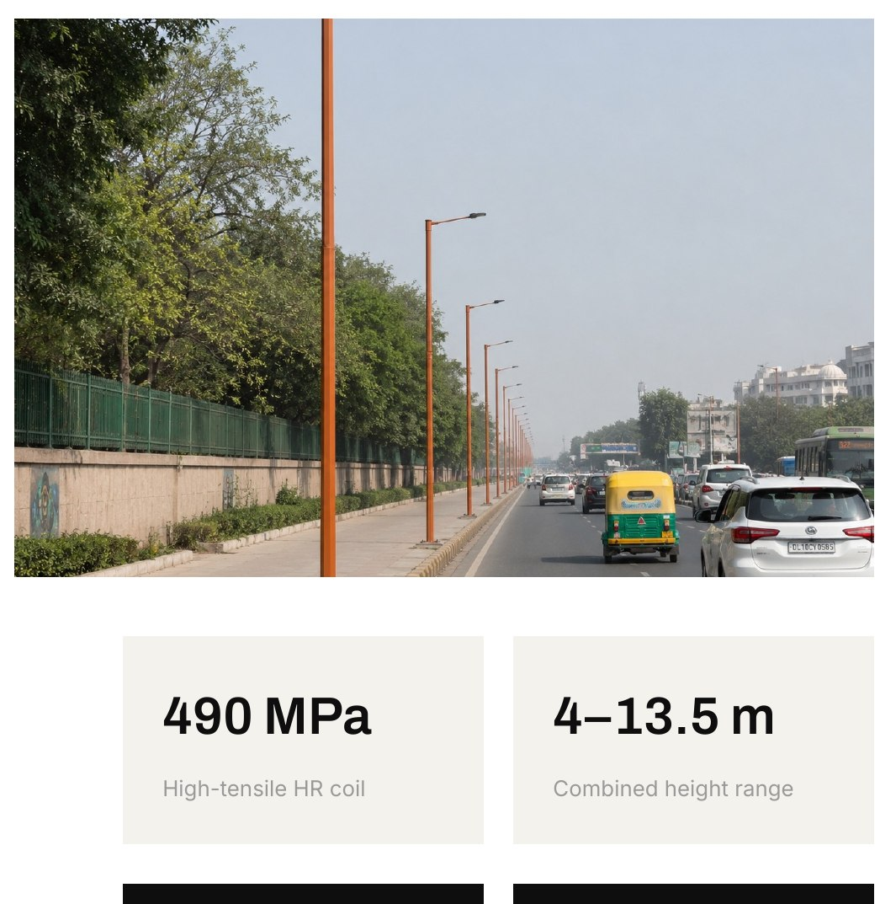
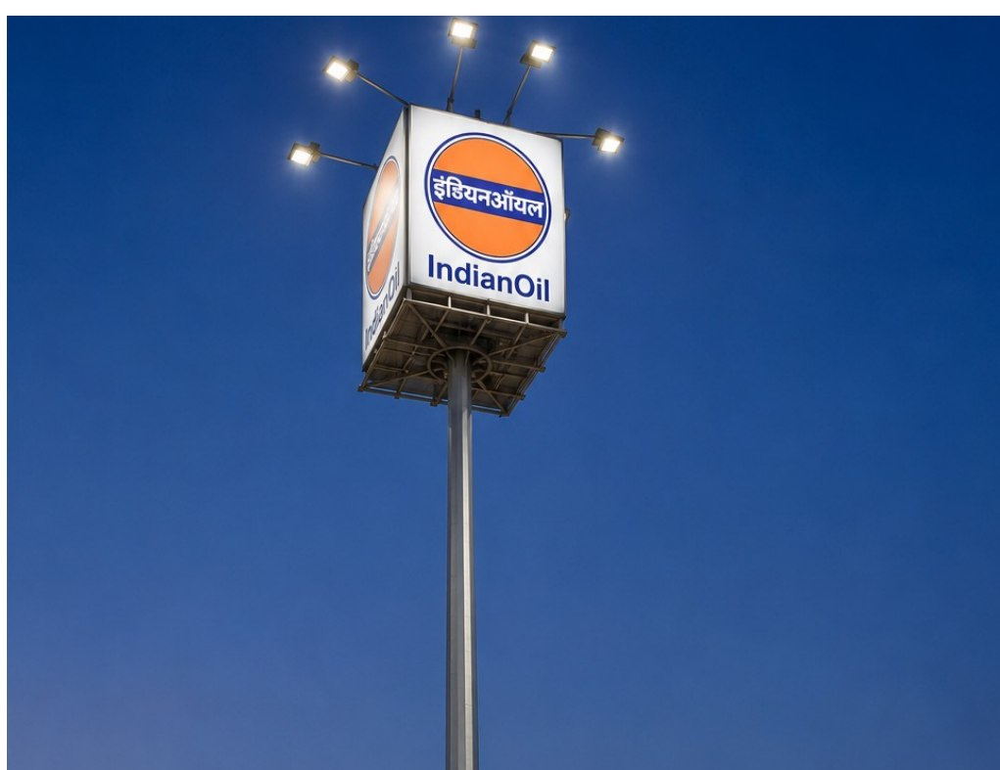
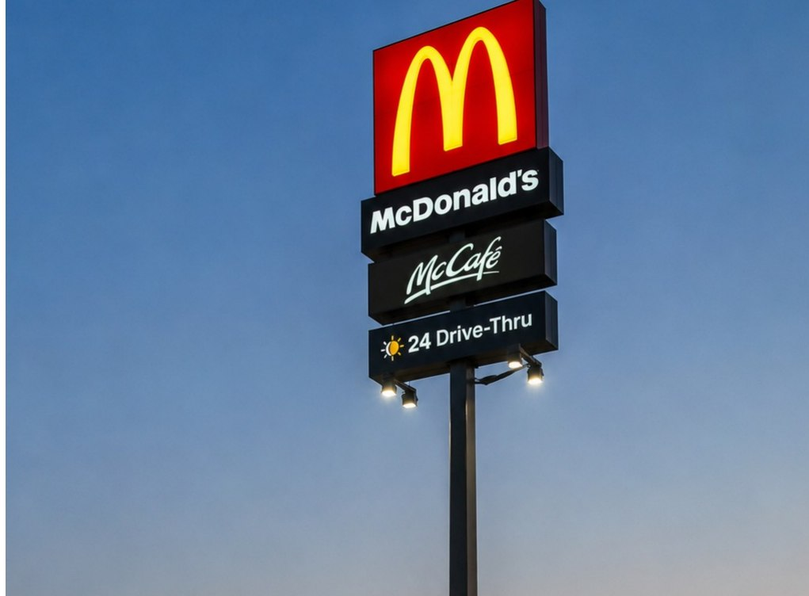
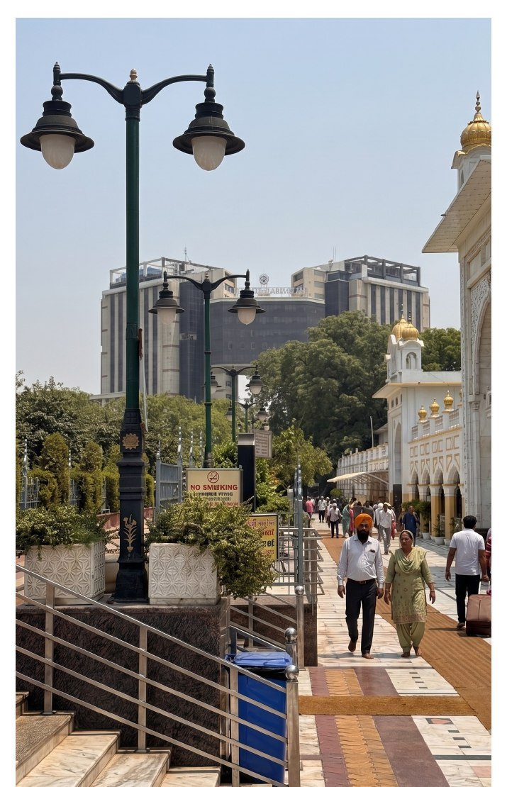
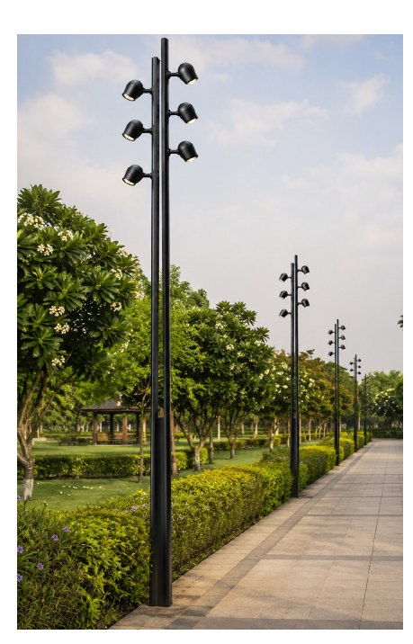

Product Range
Six Families, One Standard
Every table on this page lists BPP’s standard range. Non-standard heights, thicknesses, polygon counts, bracket geometries and finishes are engineered to order; for large orders BPP will design and produce any product not found here.
Product 01: High Mast Systems
High Masts, Engineered for Extremes
BPP high masts range from 12.5 m to a monumental 70 m+, in configurations carrying 6, 9, 12, 18, 24, 32 or 112 light fittings. Every mast is engineered to IIT Kanpur’s Wind Velocity Certification standard and finished in our own hot-dip galvanizing plant in single-dip sections up to 14 m long.
Applications
- Street & highway lighting
- Oil depot & refinery lighting
- Stadium & apron lighting
- Port & dockyard lighting
- Telecom / cellular networks
- Wind turbine installations


Standard High Mast Range
Luminaire options: 6 / 9 / 12 / 18 / 24 / 32 / 112 fittings. Masts above 30 m, alternative luminaire counts and non-standard configurations are engineered to order; please share the site wind zone and luminaire schedule with your enquiry.
Engineering Advantages
- Minimum wall thickness never less than 4 mm: against the 3 mm typical of imported masts.
- Single longitudinally welded mast available on request.
- Balanced 3-point suspension lantern carriage for true, even lowering.
- Double-drum winch with compensating disc: carriage tilt is straightened without lowering the carriage ring.
- 3-pulley system with guide to prevent wire and cable slip-off in any position.
- Torque limiter and limit switch for automatic motor trip-off during docking of the lantern carriage.
- Telescopic slip joints with overlap of 1.5 × diameter at every site joint.
- Hot dip galvanized in a single dip in our in-house plant, up to 14 m long sections, 86 micron minimum.
- Anti-vandalism base door, 1200 × 250 mm, with wooden stack board and 150 × 150 mm cable termination box.

| Material construction | BS EN-10025 |
| Metal protection | Hot dip galvanized |
| Galvanizing thickness | 86 micron minimum |
| Joint type | Telescopic slip joint |
| Overlap at site joint | 1.5 × diameter |
| Sheet source | TATA / SAIL high-tensile |
High Mast Technical Parameters
12-luminaire configuration. All dimensions in mm unless stated otherwise.
| Parameter | 30 m | 25 m | 20 m | 16 m | 12.5 m |
|---|---|---|---|---|---|
| Make | BPP | BPP | BPP | BPP | BPP |
| Material construction | BS EN-10025 | BS EN-10025 | BS EN-10025 | BS EN-10025 | BS EN-10025 |
| Cross section (polygon sides) | 20 sided | 20 sided | 20 sided | 20 sided | 12 sided |
| Thickness (mm) | 5, 4, 4 | 5, 4, 4 | 4, 3 | 4, 3 | 3, 3 |
| Length of individual sections | 10,500 ×3 | 8,875 ×3 | 10,375 ×2 | 8,375 ×2 | 6,500 ×2 |
| Base dia. / top dia. | 600 / 150 | 485 / 150 | 450 / 150 | 450 / 150 | 340 / 150 |
| Type of joints | Telescopic slip | Telescopic slip | Telescopic slip | Telescopic slip | Telescopic slip |
| Overlap at site joint | 1.5 × dia. | 1.5 × dia. | 1.5 × dia. | 1.5 × dia. | 1.5 × dia. |
| Metal protection | Hot dip galv. | Hot dip galv. | Hot dip galv. | Hot dip galv. | Hot dip galv. |
| Galvanization (min.) | 86 micron | 86 micron | 86 micron | 86 micron | 86 micron |
| Opening door at base | 1200 × 250 | 1200 × 250 | 1200 × 250 | 1200 × 250 | 1200 × 250 |
| Locking / door | Anti-vandalism | Anti-vandalism | Anti-vandalism | Anti-vandalism | Anti-vandalism |
| Stack board inside | Wooden base board | Wooden base board | Wooden base board | Wooden base board | Wooden base board |
| Cable termination box | 150 × 150 | 150 × 150 | 150 × 150 | 150 × 150 | 150 × 150 |
| Base plate diameter | 840 | 730 | 670 | 670 | 540 |
| Base plate thickness | 30 | 25 | 25 | 25 | 20 |
| Anchor plate diameter | 840 | 730 | 670 | 670 | 540 |
| Anchor plate thickness | 4 | 4 | 4 | 4 | 4 |
| Template | As anchor plate | As anchor plate | As anchor plate | As anchor plate | As anchor plate |
| Weight approx. (kg) | 1500 | 1200 | 1000 | 800 | 450 |
Weight is approximate and inclusive of base plate, door and head frame. Configurations other than the 12-luminaire standard, and heights above 30 m, are engineered to order.
Product 02: Stadium Masts
Lighting India’s Iconic Sporting Arenas

BPP specialises in mega-scale structural engineering for sporting infrastructure, from the world’s highest cricket ground at HPCA Dharamshala to marquee venues in Delhi, Pune, Gurgaon, Bangalore, Chandigarh and Silchar.
Each stadium mast is engineered for precise floodlight geometry, balanced lantern carriages and long-term structural stability under continuous vibration and wind load.
Sports Covered
CricketFootballHockeyTennisPadelPickleballAthletics & multi-sport
View selected stadium installationsProduct 03: Octagonal & Conical Poles
BPP Smart Octagonal & Conical Poles
BPP manufactures two families of uniformly tapered poles: Smart Conical, with a closely circular cross-section, and Smart Octagonal, standard 8-sided with 18-sided sections on request. Both are formed by pressing high-tensile HR coil sheet on bending machines, finished with a single longitudinal weld and single-dip hot-dip galvanizing, available from 4 m to 13.5 m in standard grey galvanized finish or full polyurethane colour coating for campus, civic and landscaped environments.
Construction Highlights
- 490 MPa high-tensile HR coil available, against 410 MPa commercial-grade pipe
- Single longitudinal weld: no swaged joint, no trapped acid, no internal corrosion path
- Flush, internally reinforced door on every category, for JB box mounting
- Easily shifted and reused, unlike planted swaged poles
- Conical: 25 standard types, 5 m – 13.5 m · Octagonal: 23 standard types, 4 m – 13.5 m




Product 04: Signage Masts
Trusted by India’s Leading Oil Marketing Companies
BPP holds a near-monopoly position in industrial signage masts, engineered to carry large branded signage safely under sustained wind loading at retail fuel outlets nationwide, the trusted signage mast manufacturer to IOCL, BPCL and HPCL.
IOCLBPCLHPCL
Custom
Engineered per canopy size & wind loading
Hot-dip
Galvanized for forecourt-grade durability
Complete
Signage carriage, flood-light brackets & branding panels




Product 05: Flag Masts & Fabrication
Monumental Flag Masts & Fabricated Structures
BPP’s structural expertise extends to monumental installations, including the landmark 60 m flag mast at the Jain Temple, Lalitpur. Flag masts are supplied with internal or external halyard systems and are engineered for the site’s specific wind zone.
Supplied With
- Internal or external halyard system, as specified
- Rotating truck assembly and finial
- Base compartment with anti-vandalism access door
- Hot-dip galvanized finish, optionally painted to RAL
- Site-specific wind-zone design and foundation drawing
Also manufactured: Sub-station structures · taper round poles · transmission towers · communication towers · swaged & welded poles · railway masts · channel sleepers · and any fabricated steel article, designed and produced to your drawing.

Design Library
Brackets & Arms
Indicative profiles. Any bracket can be designed and fabricated to your drawing.
Bracket Configurations
- Single arm: 1500 to 2000 mm
- Double arm: 2 × 800–1000 / 2 × 1000 / 2 × 1500 mm
- Multi-arm: 4-way and 6-way
- Post-top and bell lanterns
- Flood-light frames
- Pole heights 8000–14000 mm with 200–350 mm shaft dia.
Custom brackets designed and fabricated to drawing. Galvanized and finished in single dip up to 14 m long sections. For large orders BPP will design and produce any product not found in this catalogue.
Decorative Lighting
Ornamental Poles & LED Luminaires
Beyond structural lighting infrastructure, BPP manufactures a complete range of decorative and ornamental poles for heritage precincts, civic plazas, campuses and boulevards. Every pole pairs an M.S. pipe core with cast-aluminium detailing, primer-coated and finished in polyurethane paint, in heights from 2.5 m to 8 m, in richly detailed Classical or clean, sculptural Modern profiles.
Decorative LED Luminaires
- Aluminium die-cast and spun housings, poly-carbonate diffusers
- 30 W – 120 W range; CCT 3000 K – 6500 K
- Efficacy > 110 lumens/watt, power factor > 0.90, CRI > 70
- IP65 / IP66 ingress protection; internal surge protection up to 6 kVA
- Waterproof potted driver; input AC 100–270 V / 50 Hz
Ornamental brackets are available in single, double and triple-arm configurations in cast-aluminium scrollwork, FRP curved arms or stainless-steel ball finials. Ask your BPP representative for the complete Decorative Lighting Catalogue: full dimensions, wattage tables and finish charts.


